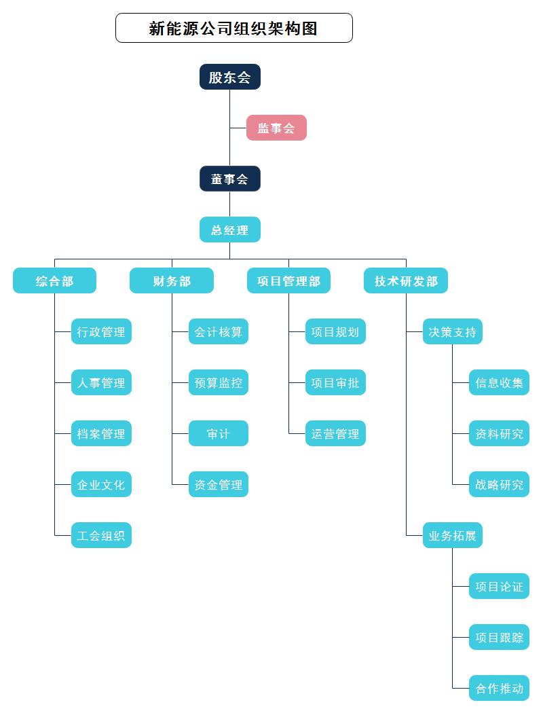
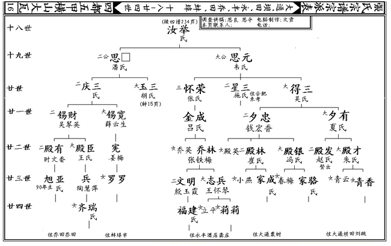
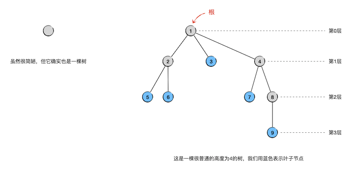

4.4. 树和森林¶
树是一种极其重要，应用极其广泛的数据结构，可以说没有一款软件可以离开树这种数据结构。其实在生活中树形结构也是普遍存在的。比如某公司的组织机构图：
{kind=link}
又比如古代大家族的族谱：
而计算机软件领域所谓的树就是对生活中大量的这种层次型组织进行抽象后总结出来一种极为重要的非线性数据结构。所谓非线性数据结构，就是说数据项不是一个接一个地排列成一条线的形状的。
树（tree）是一种单向的层次结构，数据存放的地方叫做树的节点（node），每一个节点存放一个数据项（或者叫元素），节点之间有层次上的先后关系。每一个节点在它的下一层可以直接连接着零个或者若干个子节点（child），如果一个节点没有子节点，那么就称之为叶子节点（leaf）。每一个节点在它的上一层都直接连接着零个或一个父节点（parent），每一个节点都至多只有一个父节点，整棵树上只有且仅有一个节点没有父节点，这个节点就叫做这棵树的根节点（root）。
一个节点，它的子节点可能有多个，那么这些子节点就互为兄弟节点，也叫同胞节点（sibling）。一个节点的子节点也可以有它自己的子节点，子节点的子节点也可以有它们自己的子节点……如此下去，从一个节点出发向下衍生出来的子子孙孙们，都称为它的后代节点（descendant）。反过来看，从一个节点沿着向上的路径，所有它的父节点、父节点的父节点……都称为它的祖先节点（ancestor）。
按照定义，最简单的树只有一个根节点，这个根节点没有子节点，也就是一个孤零零的根，这虽然很难看，但它也是一棵树。每一个节点的子节点数量称为它的分叉数，如果一棵树中除了叶子以外，其他所有节点的分叉数都有一个共同的上限，都最多有n个分叉，那么我们就称这样的树为n叉树。所有树结构中最为重要的一类就是所谓的二叉树，即除了叶子以外，每一个节点都有最多两个子节点。
树是有高度的，我们会对树的每一层进行编号，树根所在的为第0层，根节点的子节点是第1层，依此类推，直到最低的叶子节点所在的层。一棵树一共有几层，就称它的高度是几。因此，一棵树如果高度为 \(h\)，那么它的最低的叶子节点所在的就是第 \(h-1\) 层。
作为一种数据结构的树，我们通常用小圆圈来表示节点，用连接父子节点的直线表示其先后代关系，把根画在最上方，依次向下摆放各层的节点，同一层的所有节点放在同一条水平线上。例如：
如果把若干棵树放在一起形成一个组，这样形成的新的数据结构我们就称之为森林（forest）。森林里可以只有一棵树，所以每一棵单独的树本身也就是一个森林。
本部分重点要学习的内容是二叉树及其应用，包括二叉检索树和堆等等，另外也会学习一部分关于通常的树和森林的知识。